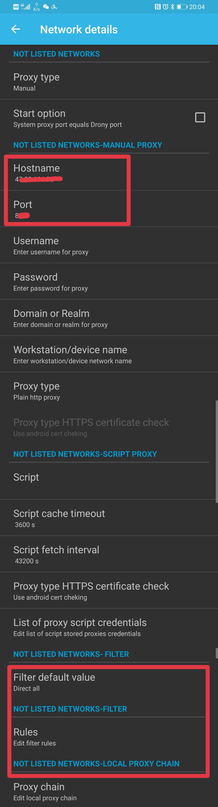
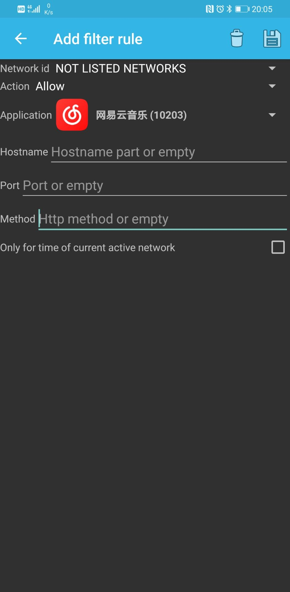

¶效果
效果如视频所示，不仅解锁灰色歌曲，甚至新发的数字专辑一样可听，虽然我很想为周董付费，然没有一个平台能满足我的需求。
如何实现的呢，使用UnblockNeteaseMusic该项目
由于作者并未详细写明使用说明，ios踩坑了好几处，花了些时间，故在此记录
完成pc，android，ios多终端使用
阅读本篇文章能了解到：网易云解锁变灰，奇技淫巧
¶Server
虽然该项目可在本地运行，本地运行服务端，本地网易云代理本地，显然并不实用，多终端同时使用是必须的
首先，你得有一台自己的vps，服务端在公网才可实现多终端
安装步骤不赘述了，安装nodejs
1 | git clone https://github.com/nondanee/UnblockNeteaseMusic.git #克隆项目仓库 |
关键点来了，严格模式是必须的，但开启严格模式会导致ios无法使用，经反复测试才找出其原因
运行命令如下，注：4000，80端口为举例，4002，81可随意，转发用的
1 | node app.js -p 4000:4002 -e https://music.163.com -s # IOS |
注意：
pc和android要使用http，IOS使用https，反复测试测出的结果
¶Client
其实pc和android很快就搞定了，然而ios特殊，步骤多，且复杂，毕竟身份尊贵
¶PC
很简单，网易云客户端自带代理功能
- 设置 -> 工具 -> 自定义代理
填入vps地址和端口port即可
¶IOS
虽有ios食用指南，但按照iOS 食用指南操作完成后你会发现ios提示网络不给力，究其原因在于server启动命令上，按照上述启动方式即可解决
取其精华，去其糟粕，把自己实际实现的过程记录下，实现按规则代理，即仅网易云走代理，不影响其他软件，ios使用小火箭做代理
- 右上角添加 -> http ip(vps) port(port) 备注：unlockNeteaseMusic
- 主界面 -> 配置 当前使用的conf文件 -> 编辑配置 -> 添加规则
添加如下两条规则
- user-agent,neteasemusic*,unlockNeteaseMusic
- domain-suffix,163.com,unlockNeteaseMusic
添加完成后，下载安装ca.crt并信用证书，如遇无法访问，也可从我博客地址下载ca.crt，照顾不会fq的朋友
安装完成后去手动信任
- 设置 -> 通用 -> 关于手机 -> 证书信任设置
至此ios端配置完成
¶Android
¶1. WIFI
wifi下较为方便设置，不过作者也未给出pac规则，使用如下规则，只需修改[vps]，保存为proxy.pac，放入你vps web端即可
1 | function FindProxyForURL(url, host) { |
接着长按连接的wifi，修改设置，正常安卓系统都有（确实存在没有自动代理的系统，如vivo，采用方式2）
- 设置 -> wlan -> 修改网络 -> 高级 -> 自动 填入你
vps开放的web端（e.g. http://redn3ck.github.io/proxy.pac）
该方式存在显而易见的问题，没有wifi时怎么办？？
¶2. 流量
这方面不得不说ios比android好太多，一个简单的http代理都没有个好用的工具，google半天才找到几个能用的，建议使用Clash，可实现同小火箭类似功能
¶Drony
使用软件Drony实现http代理，设置步骤如下
- TINGS -> Networks (Not Wi-Fi) -> Proxy type (Manual) -> Hostname(vps) -> Port(port)
- Filter default value (选择Direct all)
- Rules (添加一条规则，Action选为Allow，Application选中网易云，保存)


设置完毕，返回LOG，单击off开启代理，即可完成和ios小火箭类似功能，即仅网易云走代理，不影响其他软件
该方案有个致命缺点就是网络极慢，虽然能用，但过慢非常影响体验
¶Clash
使用软件Clash，clash的好处是无视wifi或者流量，完全实现ios小火箭的功能
该app官方issue也有人提，但按照其提供的规则无法使用，测试了许久发现可能是规则太旧
给出最新能用的规则如下，把~~issue里题主给的yaml down下来，修改rule为如下规则即可，其他地方，如服务器修改为自己的
update 2020/06/23 (已失效)
1 | Rule: |
update 2020/11/17 (已失效)
1 | rules: |
update 2021/07/28
从我github里 https://github.com/redn3ck/unblockNeteaseMusic，下载yaml，只需修改
1 | server: [your ip. e.g. 127.0.0.1] |
然后把该文件放到自己服务器web上，打开clash开始配置
- 配置 -> 新配置 -> URL -> 自己起个名字，
url填入yaml的地址（如：http://redn3ck.github.io/unblockNeteaseMusic.yaml） -> 右上角保存 -> 选中刚才添加的配置 -> 启动